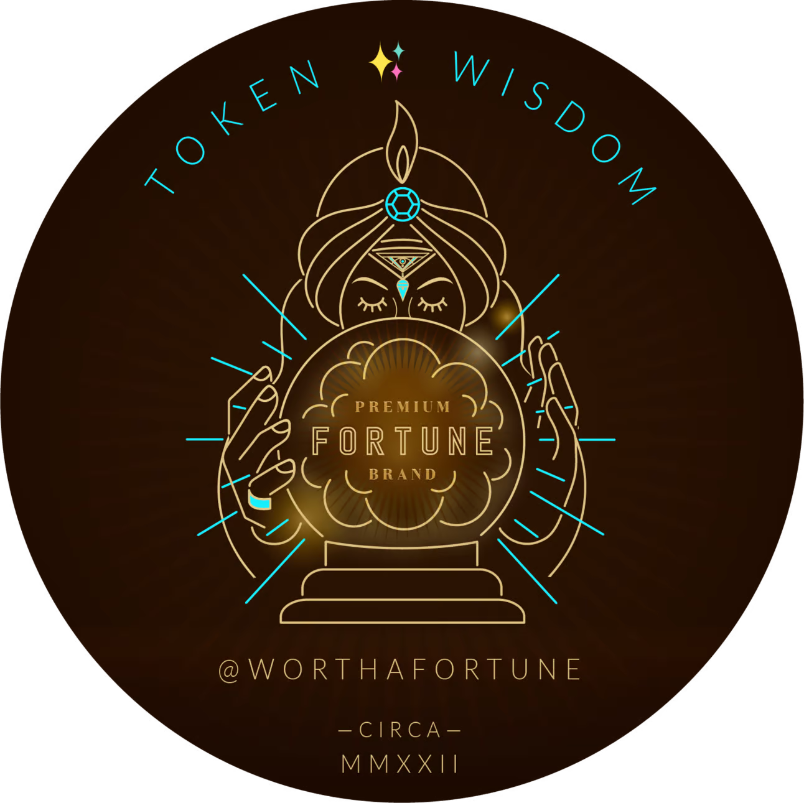

🎖️ A highly curated collection of humanly consumed knowledge.

✨ The Relaunch of Token Wisdom
Keeping up in this new generative mega-multi-meta-DAO-verse makes it hard to quantum all that spatial neural netting. You down with GPT? Ya, you know me. That's why I package up a small part of the internet that catches my eye, percolates my thoughts, stirs my mind, and share it with you from time to time.
Magic is believing in yourself, if you can do that, you can make anything happen.

🎉 Welcome to the Newest / Latest
100% Human Curated and Consumed Content

W06 — February 4th thru 10th, 2024
Welcome to another exciting edition of our curated content newsletter! Get ready to embark on a captivating journey through a diverse range of topics that will expand your knowledge and leave you craving for more.
In this edition, we have handpicked ten incredible articles that delve into the intricacies of various subjects, from the mechanics of riding a bicycle to the psychological impact of passthrough video in mixed reality headsets. We'll also explore the metaverse success of Fortnite and the boundaries of AI creativity.
But that's not all! We'll uncover the experiment that revealed the quantum world, shed light on the motivations behind graffiti tagging on downtown L.A. skyscrapers, and discuss the alarming revelation of government hackers exploiting iPhone zero-days. Plus, we'll dive into the math behind the powerful K-Nearest Neighbors algorithm and explore the shifting landscape of spatial computing.
Each article is a treasure trove of insights, offering a unique perspective on the world we live in. So, buckle up and get ready to be informed, inspired, and entertained as we navigate through these thought-provoking pieces.
Whether you're a tech enthusiast, a science lover, or someone who enjoys exploring the depths of human creativity, this edition has something for everyone. So, join us on this intellectual adventure as we uncover hidden truths, challenge established norms, and gain a deeper understanding of the world around us.
Get ready to dive into the fascinating realm of knowledge. So, let's dive in and discover the wonders that await us in this edition. Let the journey begin! ✨

The Hidden Intricacies of Bicycle Forces: A Journey into the Mechanics of Riding

Bicycles, with their simple yet elegant design, have captivated riders for centuries. But have you ever wondered about the forces that enable a bicycle to accelerate, brake, and turn without compromising its structural integrity? In this executive briefing, we will peel back the layers to uncover the intricate mechanics at play, providing a deeper understanding of the interplay between forces and components in bicycle riding.
Industry Highlights
- Newton's Laws of Motion: Unravel the fundamental principles that govern the behavior of objects in motion and their interaction with forces.
- Pedaling and Propulsion: Discover how the pedaling action generates torque, propelling the bicycle forward through the chain and rear wheel.
- Braking and Deceleration: Explore the role of friction and tire deformation in generating braking forces, and understand the limitations and considerations for effective braking.
Key Topics and Insights
- Understanding the Balance of Forces: Gain insights into the delicate balance of forces that allow a bicycle to maintain stability during acceleration, deceleration, and turning.
- The Role of Tire Deformation: Explore how tire deformation influences the generation of forces for propulsion and braking, and its impact on overall ride performance.
- Optimizing Braking Efficiency: Examine the relationship between braking force, tire load, and the potential for wheel lock-up, providing valuable insights for enhancing rider safety.